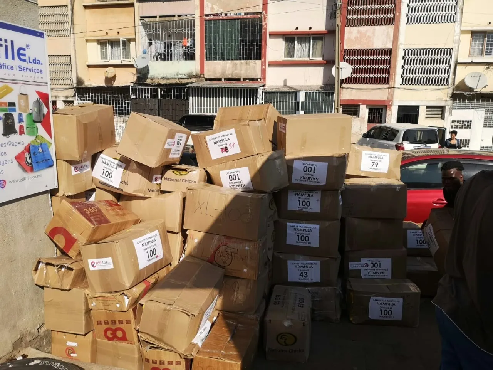
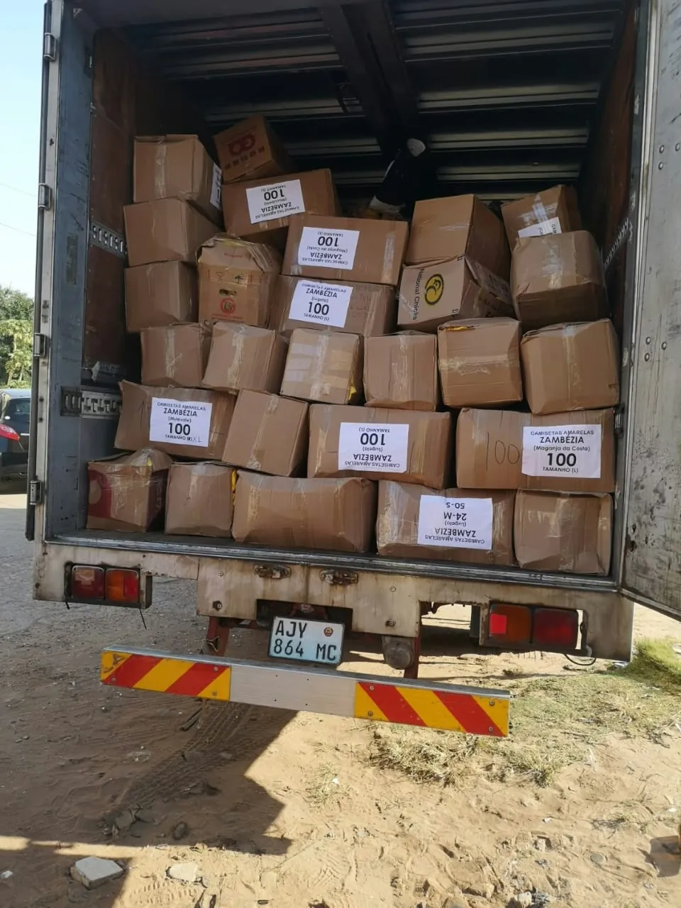
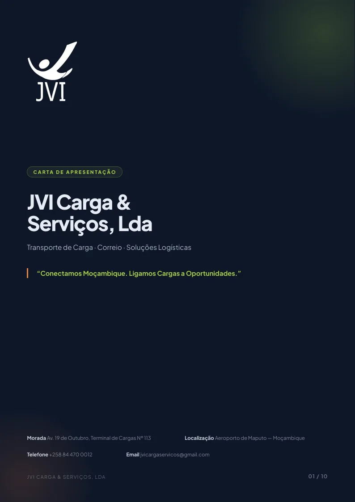

Mais Agilidade
Redução substancial do tempo de encaminhamento e distribuição, da recolha à entrega final.
Transporte, tratamento e distribuição de encomendas e objectos postais em todo o território moçambicano e internacional — por via aérea e rodoviária, com mais de 10 anos de rigor operacional.
Quatro compromissos que sustentam cada encomenda que passa pelas nossas mãos, de Rovuma ao Maputo.
Redução substancial do tempo de encaminhamento e distribuição, da recolha à entrega final.
Supervisão contínua em todas as etapas da cadeia logística, com rastreio rigoroso da mercadoria.
Capacidade de ligação entre os principais pontos do país, cobrindo todo o território nacional.
Optimização directa dos custos operacionais, com soluções ajustadas a cada parceiro.
Do tratamento de objectos postais a planos logísticos corporativos, construídos à medida da sua operação.


Carga, correio e encomendas, do terminal à porta do destinatário.
Voos regulares e espaço de carga garantido, para o que tem pressa.
Carga geral, paletes e volumes grandes, por estrada.

Enviamos a partir de Maputo para as dez províncias do país.
Cada encomenda segue um percurso vertical e rastreável, com supervisão em todas as fases.
Recolhemos a sua carga no endereço indicado e procedemos à aceitação formal, com registo de volumes e peso.
Conferência documental, etiquetagem e triagem rigorosa, garantindo que cada volume segue o destino correcto.
Encaminhamento por via aérea ou rodoviária, com minimização do tempo entre recolha e entrega.
Tratamento rigoroso da carga durante toda a rota, com supervisão contínua e garantia de integridade.
Entrega pontual ao destinatário, com confirmação de recepção e conclusão do processo.
Do Rovuma ao Maputo, com operações activas nas principais terminais aeroportuárias do país.
Hub principal: Terminal de Carga do Aeroporto de Maputo, Av. 19 de Outubro, Terminal de Cargas Nº 113.
Mais de uma década de experiência no mercado moçambicano de transporte de carga e correio.
No mercado de transporte de carga em Moçambique.
Para prestação de serviços postais.
Entidade legalmente registada.
Número Único de Identificação Tributária.
“Conectamos Moçambique. Ligamos Cargas a Oportunidades.”
Fotografias da nossa operação: camiões carregados, etiquetas de destino, mercadorias embaladas e o nosso material de trabalho.
Cada fotografia é uma carga que passou pelo nosso terminal. Se a sua também precisa de sair, fale connosco.
A JVI Carga & Serviços, Lda. é uma empresa moçambicana especializada no transporte, tratamento e distribuição de cargas, encomendas e objectos postais através de soluções integradas aéreas e rodoviárias. Com uma estrutura sólida e equipa qualificada, garantimos agilidade, máxima segurança e rigor operacional na movimentação de mercadorias em todo o território nacional e internacional.
Ser uma referência nacional no transporte de carga e correio, destacando-nos pela máxima eficiência.
Garantir a total satisfação dos nossos clientes, prestando serviços com rigor, elevado profissionalismo, ética e responsabilidade.
Oferecer serviços de elevada qualidade a preços competitivos, totalmente ajustados às necessidades específicas de cada parceiro.

A JVI Carga & Serviços, Lda. opera a partir do Terminal de Cargas do Aeroporto de Maputo. A carta de apresentação reúne o perfil, a cobertura, o fluxo operacional e as credenciais da empresa.
Leva menos de dois minutos. Escreve o peso, vê o preço, e envia — a JVI responde com uma proposta detalhada.
O preço sai do seu peso: 3 000 MT até 10 kg, 255 MT por kg acima disso, IVA incluído. O preço nunca desce quando o peso sobe.
Se a sua pergunta não estiver aqui, escreva-nos no WhatsApp — respondemos no mesmo dia útil.
Até 10 kg, o transporte custa 3 000 MT. Acima disso, 255 MT por cada quilo. O preço final inclui IVA de 16% e nunca desce quando o peso sobe.
Entre 24 e 72 horas úteis dentro do país, por via aérea. Por estrada, consoante a rota. Confirmamos o prazo exacto ao fechar o orçamento.
Por e-Mola, cartão de crédito ou numerário. Também pode pagar no levantamento, na província de destino, quando for buscar a encomenda.
Sim. Trabalhamos com parceiros aéreos e rodoviários para Angola, África do Sul e Zimbabwe. Fale connosco para o seu destino específico.
Assim que a carga é aceite, recebe o número de registo. O acompanhamento é feito por WhatsApp, com quem trata da sua remessa.
Para mercadoria nacional, a factura ou a declaração de valor. Para carga internacional, a documentação comercial e, quando aplicável, a licença de importação. Confirmamos caso a caso.
Acreditamos que uma boa logística vai além de transportar — é garantir que a sua oportunidade chega com pontualidade e segurança.
Conheça a JVI em detalhe — perfil, cobertura, fluxo operacional e credenciais.
Três passos rápidos. O preço aparece logo à medida que escreve o peso.
Abra o WhatsApp para enviar o pedido à JVI e receber a confirmação. Se os separadores abrirem sozinhos, pode ignorá-los.
Enviar o pedido à JVI Receber a confirmação no meu WhatsAppLeia e confirme. Depois enviamos tudo por WhatsApp — à JVI e ao seu número.
A JVI Carga & Serviços, Lda., com sede no Terminal de Cargas Nº 113 do Aeroporto de Maputo, é a entidade responsável pelo tratamento dos dados pessoais recolhidos através deste site.
Apenas os dados que voluntariamente introduz no formulário de pedido de orçamento:
Não recolhemos categorias especiais de dados, nem dados de crianças. O formulário não pede email, número de volumes nem valor da carga.
O endereço IP da visita é guardado temporariamente, em memória do servidor, apenas para limitar pedidos repetidos. Não é escrito em ficheiro e desaparece ao fim de uma hora ou quando o servidor é reiniciado.
Não vendemos, alugamos nem cedemos os seus dados a terceiros para fins comerciais.
O tratamento assenta no consentimento que dá ao marcar a caixa no formulário e no execução de contrato, quando o pedido se converte numa remessa. Conservamos os dados durante 24 meses a contar da última interacción, findos os quais são eliminados, salvo obrigação legal de guarda diferente.
Este pedido viaja por WhatsApp. O endereço wa.me redirecciona para servidores da Meta Platforms Ireland Ltd., pelo que o conteúdo da mensagem — nome, contactos, morada e dados da carga — é transmitido a essa empresa. O e-mail, quando enviado, é processado pela Resend Inc. antes de chegar à caixa jvicargaservicos@gmail.com. O pedido fica registado numa folha de cálculo de acesso restrito da JVI. O site é alojado na Netlify, que processa os dados técnicos da visita nos seus próprios servidores.
O botão «Como chegar à JVI» abre o Google Maps num separador novo, num servidor da Google. É uma decisão sua: nada acontece enquanto não clicar. O link leva só o endereço do terminal como destino — a JVI não recebe, não guarda e não vê a sua posição, e o site não pede nem acompanha a sua localização. Se preferir, o endereço está na secção Contactos e pode ser copiado para o mapa que usar.
A JVI é a entidade responsável pelo tratamento. Pode pedir a eliminação do seu pedido a qualquer momento, pelo endereço de email acima ou por telefone.
Este site não utiliza cookies. Não há rastreio de publicidade, nem analítica de terceiros. A tipografia é alojada no próprio site. O único serviço da Google que este site usa é o botão «Como chegar à JVI», e apenas quando clica nele: aí abre o Google Maps num separador novo, num servidor da Google, e é o Google — não a JVI — que lhe pergunta, ou não, onde se encontra.
Pode, a qualquer momento, pedir o acesso, a rectificação, o apagamento, a limitação ou a oposição ao tratamento dos seus dados, bem como retirar o consentimento. Basta escrever para jvicargaservicos@gmail.com ou ligar +258 84 793 5035. Tem ainda o direito de reclamar junto da entidade competente de protecção de dados em Moçambique.
Podemos actualizar este documento para reflectir mudanças legais ou operacionais. A data da última revisão é indicada abaixo e qualquer alteração significativa será assinalada nesta página.